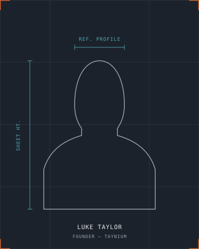

Closing the gaps between design, production and real-world operation.
Taynium was created to bring practical engineering experience and modern digital tools together. Many of the most expensive engineering problems exist in the gaps between design, production, software and real-world operation. Taynium focuses on closing those gaps.

Luke Taylor
Luke's background spans more than eight years within a UK agricultural and packhouse machinery manufacturer, progressing through mechanical fitting and machinery assembly, electrical installation and industrial control-system work, machinery servicing, international installation and commissioning, design engineering, and research and development.
He currently works in R&D, helping develop machinery, solve production problems, standardise products and processes, support manufacturing teams and evaluate new equipment and technology.
That progression has given Luke the experience of engineering from several different vantage points: the person assembling the machine, the engineer wiring and testing it, the service engineer diagnosing what's gone wrong, the installer commissioning it on site, the designer creating and revising it, the R&D engineer improving it, and the software developer automating the workflow around it.
The result is an approach where design decisions are judged not only by whether they work in CAD, but by whether they can be manufactured, assembled, operated, serviced, documented and controlled effectively.
Luke's technical training includes electrical inspection and testing and the 18th Edition Wiring Regulations, alongside industrial wiring and control-panel building, with practical experience of machinery controls, motors, variable-frequency drives, sensors and industrial electrical systems.
Luke is presented as a highly experienced, multidisciplinary and practically minded engineering professional — not as a chartered engineer, licensed electrician, structural engineer or specialist software consultancy.
A simple, five-stage methodology
Projects can begin as a small feasibility study or prototype before progressing into a larger implementation — there's no requirement to know exactly which service is needed before getting in touch.
Understand
Review the problem, current process, constraints, users, existing data and desired outcome.
Define
Turn practical requirements into a clear scope, specification, workflow or development plan.
Develop
Create the design, prototype, software tool, automation or engineering solution.
Validate
Test against representative files, machinery conditions, production requirements or user workflows.
Implement and improve
Support deployment, documentation, feedback, revisions and future development.
Describe your engineering problem
There's no need to know which service fits before getting in touch — describe the current process and what a better outcome would look like.